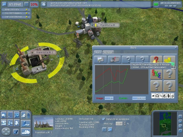

Energie Tycoon
Archivierte Anleitung
Dieser Artikel wurde archiviert, da er - oder Teile daraus - nur noch unter einer älteren Ubuntu-Version nutzbar ist. Diese Anleitung wird vom Wiki-Team weder auf Richtigkeit überprüft noch anderweitig gepflegt. Zusätzlich wurde der Artikel für weitere Änderungen gesperrt.
Zum Verständnis dieses Artikels sind folgende Seiten hilfreich:
Energie Tycoon  ist eine Open Source Wirtschaftssimulation mit dem Ziel ein Energie-Imperium aufzubauen. Der Spieler kann aus 25 verschiedenen Kraftwerken auswählen und diese bauen, Ressourcen fördern und handeln, sowie neue Technologien erforschen. Es stehen mehrere Karten mit unterschiedlichen Missionen zur Verfügung. Zusätzlich wird eine Tutorialreihe zum Erlernen der grundlegenden Funktionen des Spiels bereitgestellt.
ist eine Open Source Wirtschaftssimulation mit dem Ziel ein Energie-Imperium aufzubauen. Der Spieler kann aus 25 verschiedenen Kraftwerken auswählen und diese bauen, Ressourcen fördern und handeln, sowie neue Technologien erforschen. Es stehen mehrere Karten mit unterschiedlichen Missionen zur Verfügung. Zusätzlich wird eine Tutorialreihe zum Erlernen der grundlegenden Funktionen des Spiels bereitgestellt.
Das Spiel selbst läuft, neben Ubuntu (bzw. Linux) noch auf Windows und MacOS.
|  |
| Energie Tycoon |
Installation¶
Hinweis!
Fremdpakete können das System gefährden.
Auf der Webseite wird ein .deb Paket zur Verfügung gestellt das wie gewöhnlich installiert wird [1]. Nach der Installation ist die voreingestellte Sprache innerhalb des Spiels Englisch. Möchte man die Sprache auf Deutsch umstellen, öffnet man die Datei /usr/share/games/energytycoon/lang.cfg in einem Editor[2] mit Root-Rechten[3], ersetzt en mit de und speichert ab.
Probleme¶
64bit System¶
Bei der Installation auf einem 64bit-System muss zunächst das .deb-Paket heruntergeladen werden und die Installation dann wie folgt erzwungen werden:
sudo dpkg -i --force-all energytycoon_release1_package.deb
Anschließend müssen mit getlibs die fehlenden Bibliotheken nachinstalliert werden.
Freie Grafiktreiber¶
Die Nutzung von freien Grafiktreibern (bspw. radeon) kann zu Performanceverlust, Grafikfehlern bis hin zu unerwünschten Abstürzen des Spiels führen. Aus diesem Grund empfiehlt der Hersteller eine aktuelle Grafikkarte (Radeon HD4***/GeForce6) und die dazugehörigen proprietäre Treiber zu verwenden.

Infobox¶
| Energie Tycoon | |
| Originaltitel: | Energie Tycoon |
| Genre: | Wirtschaftssimulation |
| Sprache: |  |
| Veröffentlichung: | 2010 |
| Systemvoraussetzungen: | mind. 1.2 GHz / 512 MB RAM / 60 MB freier Festplattenspeicher / Grafikkarte: Radeon 9700/GeForce4 |
| Medien: | Online-Download |
| Verfügbar für: | Windows, MacOS, Linux |
| Läuft mit: | nativ |
- Erstellt mit Inyoka
-
 2004 – 2017 ubuntuusers.de • Einige Rechte vorbehalten
2004 – 2017 ubuntuusers.de • Einige Rechte vorbehalten
Lizenz • Kontakt • Datenschutz • Impressum • Serverstatus -
Serverhousing gespendet von